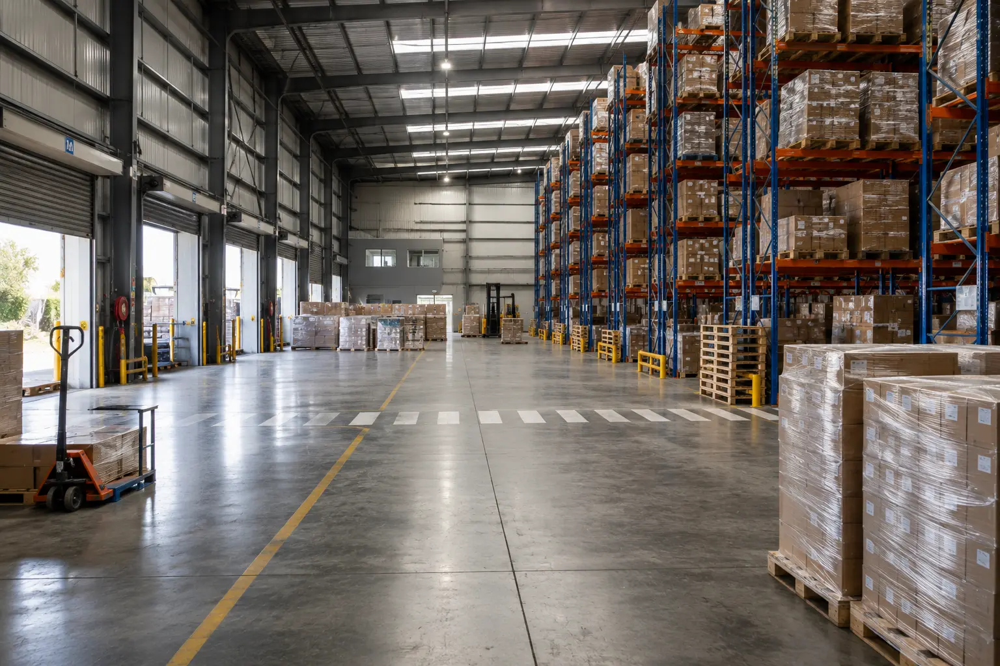

Warehouses, Distribution Centres & Logistics Facilities
Open loading bays, constant deliveries and large storage areas give pests opportunities that are easy to miss. We help Gauteng warehouse and logistics operators identify those risks, protect stock and maintain a clear service record without slowing down receiving or dispatch.

Small signs can signal costly exposure
Contamination, damaged packaging and droppings can affect stock decisions, customer relationships and the time your team spends isolating or investigating goods.
Rodents and stored-product insects can damage cartons, wrapping and goods. Even suspected contamination may force stock to be quarantined or written off.
Clients expect a clean, controlled storage environment. Missing records or repeated activity can turn a manageable issue into a difficult operational conversation.
Reactive treatments can interrupt picking, receiving and dispatch. Planned monitoring helps problems get addressed before they spread through busy zones.
Follow the movement of stock and pests
Frequently open access points allow rodents, birds and flying insects to enter while goods and vehicles move through the site.
Long runs of stock create concealed travel routes and areas where damaged packaging, droppings or insect activity can go unnoticed.
Incoming stock, returned goods and reusable packaging may introduce activity. Early inspection helps prevent pests from moving deeper into storage.
Boundary lines, drains, vegetation, waste points, parked trailers and neighbouring properties can all influence pressure around the building.
Food, water and waste in break areas can support cockroaches, ants, flies and rodents away from the main storage floor.
Beams, ledges and roof spaces can shelter birds or rodents and may sit above stock, workstations or vehicle routes.
Designed around active operations
Monitoring locations are selected around site risk, stock movement, access points and evidence-not placed at random.
Visit timing and access are planned with your operational team to avoid unnecessary interference with vehicles, pickers and loading activity.
Recurring evidence matters. We look for changes in activity so attention can be shifted to the source or developing pressure point.
Where proofing, waste, housekeeping, drainage or stock practices contribute to risk, those findings are recorded for action.
The method is matched to the pest, goods stored and affected zone, with consideration for people, equipment and normal facility use.
Operators with several Gauteng facilities can maintain site-specific scopes while using a consistent reporting and communication approach.
Built from the site outward
We review the goods stored, operating hours, delivery flow, waste handling, neighbouring risks and any customer or site requirements.
The assessment covers the perimeter, loading zones, racking, stock condition, high-level areas, staff facilities and signs of pest movement.
We define suitable monitoring points, treatment areas, service frequency, access arrangements and responsibilities for corrective actions.
Each visit builds a clearer picture. Findings are documented and the program is adjusted when activity, stock patterns or site conditions change.
Records your operations team can use
A useful pest report should help your team see where activity was found, what was done and which site condition still needs attention.
Visit and treatment records showing inspected areas, findings and work completed.
Activity observations that help identify repeat pressure around particular zones or access points.
Corrective-action recommendations covering proofing, stock, waste, cleaning, drainage and external conditions.
Common warehouse pressure
Rodents exploit loading doors, wall gaps, drains, roof spaces and quiet storage zones, causing contamination and packaging damage.
Beetles, moths and weevils may arrive in or spread through susceptible dry goods. Correct identification is essential before deciding on treatment.
Birds use roof structures and open bays, while cockroaches and flies concentrate around food, waste, moisture and staff areas.
Questions from warehouse and logistics teams
In many cases, yes. We agree on safe access, active work zones and suitable service timing with your facility contact before the visit. Some treatments may require temporary control of a specific area.
Frequency depends on the stored goods, building condition, delivery volume, surrounding environment and pest history. We recommend a schedule after assessing the actual site risk.
Yes. Pallets, cartons, returned stock and vehicles can introduce rodents or insects. A strong receiving and inspection process supports the pest management program.
Yes. Reports record relevant findings, inspected or treated areas and recommendations that can be retained by facility management.
Yes. We can scope each location according to its individual risk while keeping communication and reporting consistent across a Gauteng network.
Isolate the affected goods and avoid disturbing evidence more than necessary. Record the location and contact us promptly so the surrounding area and likely movement routes can be assessed.
Other commercial facilities we support
Tell us what you store, where the facility is and what activity has been found. We will help you define the right inspection and servicing plan.